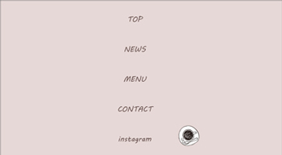

デザインカンプ
ローディング画面
ハンバーガーメニュー

ロゴマーク
使用カラー
ダークブラウン #624B48
制作期間
4日間(20時間)
デザイン
ディレクター役がコンセプトシートとワイヤーフレームを作成し、それを元にデザインカンプを作成しました。
構成、素材収集、レタッチ、ロゴ制作、デザインレイアウト、キャッチコピー、ライティング、デザインカンプ作成を担当しました。
清澄白河にある20代～30代がターゲットのカフェで、世界観や雰囲気を伝えられるような素材選定、リタッチ、カラー、フォント、ロゴにこだわりました。
お店の明るく温かい雰囲気を伝えることと、食べ物がおいしそうに見えることに特に重点を置き、素材選びと加工に力を入れました。
また、サイト全体の色調をペールトーンにし、フォントを手書き風かつブラウンカラーを使用することで、優しい雰囲気のサイトに仕上げました。
20代がメイン顧客層なので、インスタグラムの投稿を多めに掲載し、インスタグラムを見ての来店促進に繋げています。
背景色をコンテンツごとに変え、視認性を高める工夫をしています。
適度なコンテンツ量となるよう意識し、お店のコンセプトをしっかり伝え、顧客が知りたい情報にもすぐにアクセスできる導線にしました。
概要
コンセプト
清澄白河にある、白を基調に木目を活かした棚やカウンター、アンティーク風のインテリアで明るく温かいイメージの内装のカフェ。１店舗のみの経営。コーヒーなどドリンクにスイーツ(看板メニュー)、サンドイッチやパン類などの軽食も提供している。季節に合わせてドリンクやメニューも考案し提供を行っている。内装や食器類にこだわり、20代の若い層のおしゃれ好きや、カフェ好き、スイーツ好き、カップルなどSNS
を普段から多用する層をターゲットにしている。
現在インスタグラムを運営し集客しているが、リピート率が低く、さらにブランド価値を高め、リピーターのファンを増やし継続して来店してもらうためにホームページの作成を依頼。
ターゲット
26歳女性。年収350万。Web
デザイナー。東京都在住。ひとり暮らし。上京し短大の保育課卒業後、保育士として勤務していたが、慢性的なサービス残業や職場の人間関係に疲れ転職を考える。イラストを描いたり行事の企画などクリエイティブな仕事は好きだったため、退職後は職業訓練校に通い、現在Web
デザイナーとして勤務している。仕事の後は家で映画やドラマをみて過ごす。仕事のためにインプットを心がけており、サイトの閲覧や読書、外出し様々なデザインに触れ刺激を受けている。２年ほど付き合っている彼氏がおり、彼は不動産の営業をしている。お互い仕事が忙しいため、週に１、２回時間が合う時に会い食事やデートを楽しむ。
目標設定
ブランドイメージの確立、向上、Line ショップカード開設 ５０名/ 月、リピーター率の増加、継続来店サービス使用 １０名/ 月、閲覧数１００件/ 月、清澄白河＋カフェでの検索上位表示(１ページ目)